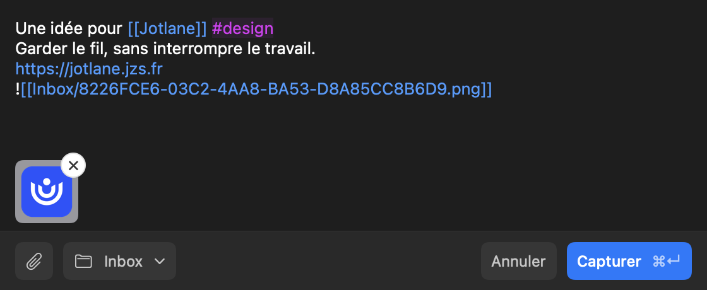
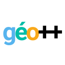
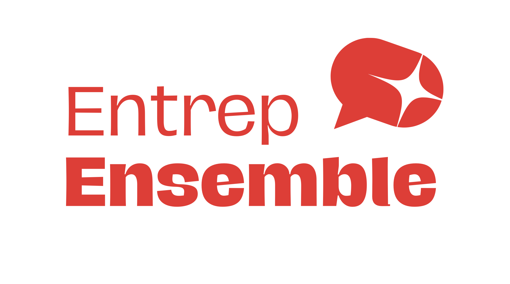
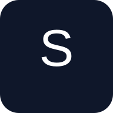
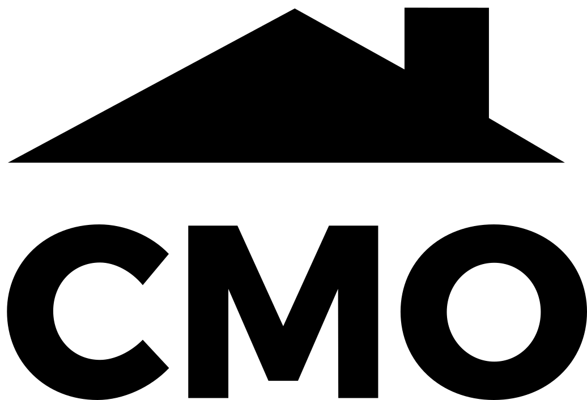

macOS 14+
Jotlane
Capturez du texte, des images et des liens vers votre inbox Obsidian avec un raccourci clavier.
Gratuit · Alpha · Intel et Apple Silicon
Swift
L’atelier de Jean
Je développe les outils dont j’ai envie de me servir.
En voici la collection, des applications aux premières expériences.
À découvrir App Mac · Alpha
Gardez l’idée.
Reprenez le fil.
Un raccourci pour envoyer du texte, des images et des liens dans votre inbox Obsidian.
Télécharger pour MacGratuit · macOS 14+ · Intel et Apple Silicon

Le catalogue
Applications, code et chemins de traverse.
47 projets à explorer
Chaque carte indique comment y accéder.
Capturez du texte, des images et des liens vers votre inbox Obsidian avec un raccourci clavier.
Gratuit · Alpha · Intel et Apple Silicon
Organisez vos notes en arborescence et naviguez dans votre vault à partir de leurs noms.
Transformez vos raccourcis de saisie en textes réutilisables pendant que vous écrivez.
Reliez vos notes dans des tableaux de suivi, avec des tâches récurrentes et des vues CRM.
Décrivez vos workflows d’agents IA en YAML et lancez-les depuis votre projet.

Recherchez un lieu depuis une URL et déplacez les étiquettes de mesure sur Geoportail.
Jouez à deux sur le même écran : alignez trois symboles et recommencez la partie.
Une application de mise en relation pour organiser le covoiturage au sein d’une chorale.
Faites défiler des annonces sur un écran vertical et gérez leur contenu depuis une administration.

Un wrapper de dotenv pour faciliter la gestion des fichiers de configuration avec Git.
Convertissez un emploi du temps PDF en fichier iCal à importer dans un calendrier.
Un service qui génère des fichiers calendrier .ics à partir de edt.univ-tlse3.fr.
Un plugin WordPress réalisé pour afficher des produits WooCommerce dans une disposition spécifique en page d’accueil.
Explorez une estimation de revenus à partir d’une audience et d’hypothèses de conversion. Les résultats sont des simulations.
Un exercice de boutique avec catalogue et panier, réalisé avec Angular, Node.js et SQLite.
Le dépôt backend associé à l’exercice de boutique Angular.
Une calculatrice réalisée pour découvrir Angular pendant la formation MIAGE.
Un exercice d’application Angular réalisé en juillet 2019.
Un projet étudiant en Java réalisé à l’université Toulouse III Paul Sabatier.
Une page de démonstration utilisée pour expliquer le phishing et les adresses web trompeuses.
Une expérimentation de clone de ChatGPT. Le code est disponible sur GitHub.
Des suggestions pour renommer les fichiers dans Obsidian. Projet abandonné au profit de Dot Navigator.
Le dépôt du portail de jeux web. La page du dépôt ne contient pas encore de cartes de jeux.

Une base d’application web progressive avec React, TypeScript et Supabase.
Projet React et TypeScript issu de Lovable. Le README public décrit son environnement de développement.
Dépôt JavaScript public. Présentation fonctionnelle à documenter.

Dépôt public du projet Confort Maison Occitanie. Présentation à documenter.
Dépôt TypeScript public. Présentation fonctionnelle à documenter.
Dépôt JavaScript public. Présentation fonctionnelle à documenter.
Dépôt HTML public. Le contexte et le fonctionnement restent à documenter.
Un petit projet pour tester la publication de pages sur GitHub.
Un relais de redirection conçu pour les liens utilisant un protocole autre que HTTP.
Dépôt de démarrage dont le README public contient uniquement le nom du projet.
Dépôt de démarrage PHP. Configuration et usage à consulter dans le code.
Dépôt de démarrage JavaScript. Configuration et usage à consulter dans le code.
Une base frontend avec TypeScript, Sass, Webpack et rechargement automatique.
Un projet basé sur le template de blog Strapi, avec les commandes de développement et de déploiement.
Un projet basé sur l’exemple de plugin Obsidian pour démarrer un développement.
Mon site personnel : accompagnement technique, formations, parcours et projets.
Essayez un autre mot ou affichez toute la collection.
Cette collection rassemble mes projets publics, y compris les prototypes, exercices et archives. Les templates sont identifiés comme tels. Le code disponible ne garantit pas qu’un projet soit encore maintenu.